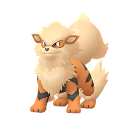
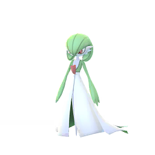

寶可夢資料

耿鬼
耿鬼是深紫色的寶可夢，牠有一雙腿和一個短而尖的尾巴。耿鬼的眼睛是紅色的，背後有些刺狀的突起，牠的嘴角彎彎翹起，帶著一絲微笑。超級耿鬼全身各部分均有尖刺，身體的下半部分為紫紅色。原本的尾巴生出了尖刺。額頭正中有一個黃色的類似金幣的物體，中間有空洞。超極巨耿鬼的嘴巴變得很大，張開的大嘴巴裡吐出了長長的舌頭，無法看到嘴巴裡面的具體情況，它的兩個手臂相較於嘴巴來說要小得多。

風速狗
風速狗是外表類似大型犬類的寶可夢。牠有蓬鬆的亞麻色毛髮，覆蓋了面部。眼睛變為褐色，身體有像老虎般的黑橙條紋，腳上有毛髮圍繞著，尾部則有長尾，奔跑時身體猶如與風融合，相當有威嚴。洗翠風速狗看起來像一個石獅子。它的毛髮為灰黑色，頭頂的毛髮形成了一個角，脖子周圍的一圈毛髮宛如花瓣向四周展開，中間帶有紅色的毛髮。它的尾巴向上，腳上也有毛髮圍繞。
